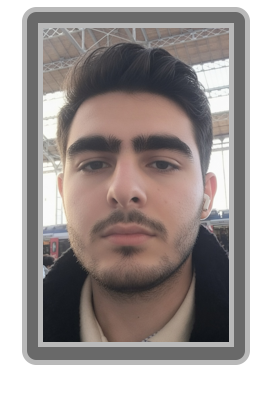

William Pinaud nait le 3 Avril 2005 à Lyon en France. Il grandit avec deux père aimant, Alexandre et Léo Pinaud. William a souvent un comportement étrange pour un enfant, il rit de l'échec, car pour lui tant qu'il s'amuse il n'y a pas d'échec.
William rencontre Gabriel Frouard dans les couloirs de leur formation commune en BUT Informatique en 2024. En 2027, ils se présentent ensemble avec leur projet : Power Shoes au Concours Backshot, qu'ils remportent, les deux collaborateurs en avaient esquissé les bases dès 2024. Pendant ces années, William adopte aussi un signe, le "Shaka", il réalise ce signe en toute circonstance, même lors de signatures de contrats avec des ministres.
Après le départ de Gabriel suite à son accident de 2028, William divient le seul directeur de Power Shoes. William Pinaud dirige l'entreprise seul et l'ammène a plusieurs bon succès, mais il est toujours concentré sur sa passion première, le jeux vidéo.
En 2035, William fonde Lecrepus Company, un entreprise de création de jeux vidéo. Il délègue la majorité de son travail chez Power Shoes à Bastien Tibiano, un fils de Giovanni Tibiano, pour se concentrer sur Lecrepus Company. William déteste la mentalité de Deschamps Electronic Arts, un concurent qui laisse tomber tout les projet qui en font plus d'argent, alors il devient le sauveteur de ces jeux avec son entreprise.
"Peu importe si le jeu ne se vend pas, tant que l'équipe s'est amusée à le coder. C'est ça, l'esprit Lecrepus." - William Pinaud, interview au Celestial Game Paper.